训
练
大
模
型
烧
钱
，
推
理
却
是
天
天
要
付
的
账
单
。
这
篇
N
V
I
D
I
A
官
方
教
程
把
推
理
优
化
的
整
套
打
法
讲
透
：
从
p
r
e
f
i
l
l
和
d
e
c
o
d
e
的
两
阶
段
，
到
K
V
缓
存
、
模
型
并
行
、
注
意
力
变
体
、
分
页
管
理
、
量
化
稀
疏
蒸
馏
，
再
到
i
n
-
f
l
i
g
h
t
b
a
t
c
h
i
n
g
和
推
测
推
理
。
把transformer层越堆越高，模型确实越来越聪明：准确率涨了，少样本学习有了，甚至冒出接近人类的涌现能力。但这些大模型训练起来烧钱，推理时也吃显存吃算力，而且推理是笔经常性开支，天天都要付。
今天最火的大语言模型动不动几百亿参数，有的场景还要吞很长的输入。RAG管线就是典型：往模型嘴里塞进海量检索信息，输入一长，LLM要干的活就指数级变多。
这篇教程聊的就是LLM推理里最痛的几个问题，以及实打实的解法。默认读者已经懂transformer和注意力机制。NVIDIA还提到可以用Nemotron 3这类开放模型在TensorRT-LLM上亲手试这些优化，生产级代码比纸上谈兵管用。
主流的decoder-only大模型，比如GPT-3，都是按因果建模目标预训练的，骨子里就是个next-word预测器。输入一串token，自回归地往外吐token，直到撞上停止条件，比如达到token上限、碰到停止词，或者吐出特殊的
先说token：它是模型处理语言的最小原子单位，一个token约等于四个英文字符。所有自然语言输入都要先转成token再喂给模型。
prefill阶段处理输入：模型把输入token全部过一遍，算出中间状态，也就是key和value，用来生成第一个新token。因为输入全已知，这本质上是个矩阵乘矩阵操作，高度并行，GPU利用率直接拉满。
decode阶段逐个生成输出token：每个新token都依赖之前所有步的输出状态，也就是key和value。这相当于矩阵乘向量，GPU算力根本喂不饱。瓶颈不在算得快不快，而在权重、key、value、激活从显存搬到GPU的速度。换句话说，这是个内存带宽bound的操作。
这篇教程里的大部分挑战和解法都围着decode阶段转：更高效的注意力模块、更精明的KV管理，等等。还有个细节：不同模型的tokenizer不一样，比较吞吐时token数不能直接对标，因为同一个token代表的字符数可能差很多。
提高GPU利用率最简单的办法是批处理。多个请求共用同一份模型权重，权重的显存成本被摊薄，一次搬运更大的batch进GPU，能吃掉更多闲置算力。
但batch size不能无限加，加到头就是显存溢出。要理解为什么，得先看KV缓存和LLM的显存需求。传统批处理也叫静态批处理，其实很亏：一个batch里每个请求生成的token数不一样，执行时间就不一样，所有请求都得等最慢的那个收尾，生成长度方差一大就更惨。缓解办法之一是in-flight batching，后面服务章节细讲。
decode阶段有个经典优化叫KV缓存。decode每步只生成一个token，但这个token依赖之前所有token的key和value张量，包括prefill算好的输入KV和当前步之前新算的KV。
为了不让每步都把所有token的KV重算一遍，可以把它们缓存在GPU显存里。每轮迭代新算出来的KV直接追加进缓存，下一轮接着用。有些实现里模型的每一层各有一份KV缓存。
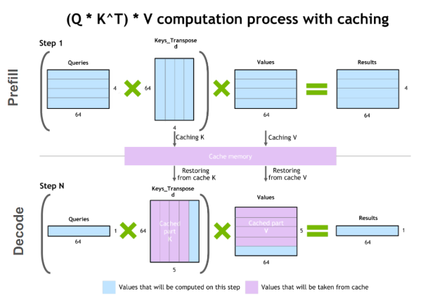
GPU上跑LLM，显存主要花在两处：模型权重和KV缓存。权重好算：70亿参数的模型，比如Llama 2 7B，用16位精度加载就是7B×2字节约14 GB。KV缓存是另一头：为了省重复计算而缓存的自注意力张量。
批处理时，batch里每个请求都要单独分配KV缓存， footprint不小。每个token的KV缓存大小有个通用公式：每token KV缓存字节数 = 2 × 层数 × (头数 × 头维度) × 每值字节数。开头的2是K和V各一份。头数×头维度通常就等于模型的hidden size，模型卡或config文件里都能查到。
假设半精度，总量公式：KV缓存总字节数 = batch size × 序列长度 × 2 × 层数 × hidden size × 2。拿Llama 2 7B举例，16位精度、batch size 1：1 × 4096 × 2 × 32 × 4096 × 2字节，约2 GB。
KV缓存随batch size和序列长度线性增长，显存需求涨得飞快，直接卡住能服务的吞吐，也让长上下文输入很头疼。这就是后面一堆优化的动机。
降低单卡权重显存占用的办法是把模型分到多张GPU上。摊薄显存和算力之后，能跑更大的模型、更大的batch。模型太大单卡装不下时，模型并行是刚需，也能让训练时间和推理的延迟吞吐达标。切法按权重怎么分有好几种。
数据并行也常被一起提起：权重复制到多卡，batch按卡切成microbatch。靠更大的batch缩短总时间，但它主要是训练期的优化，推理时用处不大。
模型并行技术在Megatron-LM、NeMo这类开放框架里都有，覆盖训练和推理。
流水线并行把模型纵向切成几块，每块是连续的若干层，跑在不同的卡上。图2a是四路流水线并行：模型被顺序切成四份，每份四分之一的层跑在一张卡上，前一卡的输出传给下一卡继续。Fn和Bn分别表示第n张卡上的前向和反向，单卡存权重的显存需求直接砍到四分之一。
它的硬伤是串行：后面的卡要等前面卡的输出，设备会闲置，前向反向都有pipeline bubble。图2b里白色空块就是朴素流水线并行的大气泡，设备空转浪费。
microbatch能缓解，如图2c：把全局batch再切成小batch逐个过，最后累积梯度。Fn,m和Bn,m表示第n张卡上第m个microbatch的前向反向。气泡变小了，但消不干净。
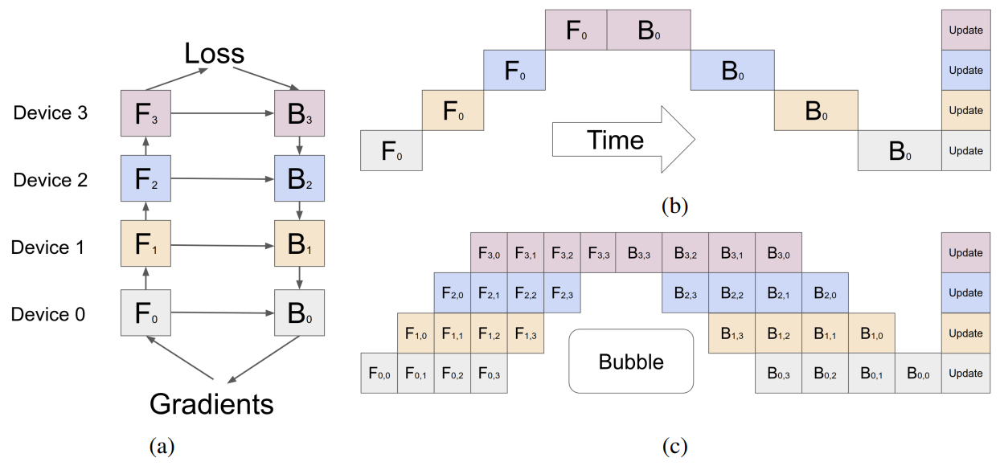
张量并行把单个层横向切成独立小块，分到不同卡上并行算。transformer里注意力块和MLP层是主力受益者。多头注意力里，每个头或每组头可以扔到不同卡上独立计算。
图3a是两路张量并行切两层MLP：第一层的权重矩阵A切成A1和A2，XA1和XA2在两张卡上独立算，单卡存权重的显存减半，第二层用一个规约操作g把输出合起来。图3b是自注意力层的两路张量并行：多头注意力天然可并行，按头切分。
但张量并行有盲区：LayerNorm和Dropout这种操作切不成独立块，只能在张量并行组里复制。它们计算便宜，可存的冗余激活不少，占显存。
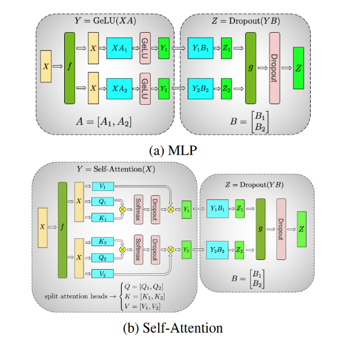
序列并行补上这块：LayerNorm和Dropout在序列维度上是独立的，沿序列维度切分就行，显存效率更高。图4展示了一个同时用张量并行和序列并行的transformer层。几种模型并行不互斥，可以叠着用。
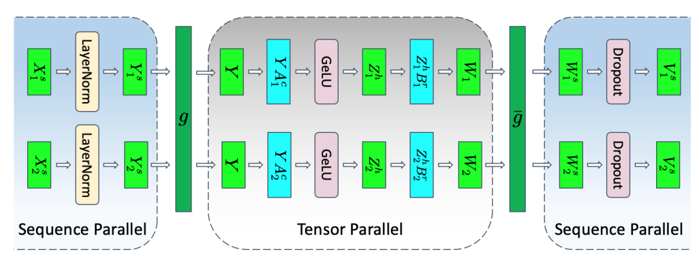
缩放点积注意力把query和key-value对映射成输出。多头注意力是它的增强版：把Q、K、V做不同的学习投影，并行跑多遍注意力，让模型同时从不同表示子空间、不同位置捕捉信息。
如图5，多个并行注意力头的输出拼起来再线性投影。每个并行的注意力层叫一个头。原始论文里用8个头时每个头只处理dmodel/8维度，算力成本和单头注意力差不多。
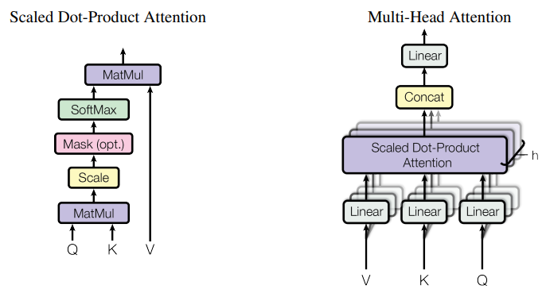
多查询注意力是MHA的推理优化：多个注意力头共享同一份key和value，只有query还做多次投影。计算量和MHA一样，但从显存读的数据量少了一大截。被内存带宽卡住时，计算利用率直接起飞，KV缓存也跟着瘦身，能塞更大的batch。
代价是精度可能掉一点，而且想用这个优化，模型得带着MQA训练，或者至少用约5%训练量微调一下。
分组查询注意力取中间路线：key和value投影到几组query头，每组内部就是多查询注意力。图6对比了三者：MHA的KV头最多，GQA居中，MQA只有一个KV头最省显存。MHA训出来的模型可以用一小部分算力uptrain成GQA，质量接近MHA，效率接近MQA，Llama 2 70B就是GQA的代表。
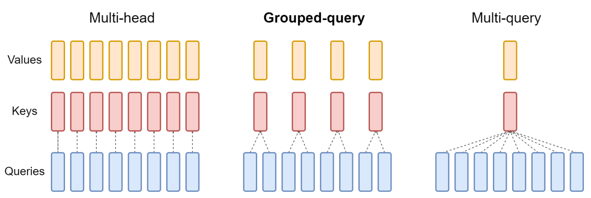
优化注意力的另一条路是重排计算顺序，把GPU的存储层次吃透。神经网络习惯按层描述，实现也一层一层算，但这不一定最优：把已经搬进高速缓存的数据多算几遍，往往更划算。
把多个层在实际计算时融合，能少读写几次显存，把需要同一份数据的计算凑在一起，哪怕它们分属网络的不同层。
最火的融合就是FlashAttention：IO感知的精确注意力算法。精确指它和标准多头注意力数学上完全等价，也有MQA和GQA变体，可以直接塞进现有架构甚至已训好的模型，不用改。IO感知指它在融合时考虑了数据搬运成本：用tiling一次完整算出一小块最终矩阵并写回，而不是分步算完整矩阵、中间反复写回中间值。
图7展示了分块的FlashAttention计算模式和一块40 GB GPU的存储层次，右边的柱状图是融合重排注意力各组件带来的相对加速。
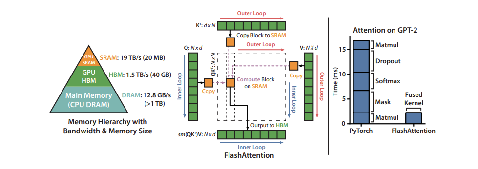
KV缓存经常被静态超配：按模型支持的最大序列长度预留，不管实际输入多长。比如最大支持2048，请求来了就先占2048的坑，通常连续分配，大片空间空着，碎片和浪费齐飞，预留的空间还要占满请求的整个生命周期。
PagedAttention借鉴了操作系统的分页：连续的key和value存到不连续的物理空间。每个请求的KV缓存按固定token数切成块，分散存放。
计算注意力时通过block table按需取块，新token生成就分配新块。块大小固定，不同请求的不同分配需求不再是问题，显存浪费被大幅压住，batch能开更大，吞吐跟着涨。图8展示了超配和低效KV缓存管理造成的浪费与碎片。
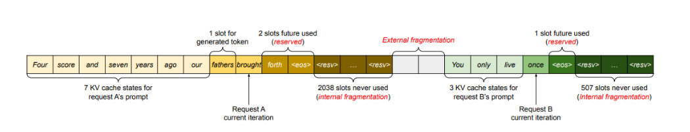
前面讲的都是怎么分、怎么存，还有一类是直接改权重本身，让每张卡上的模型更小。GPU对这些改造后的值还有专用硬件加速，速度更快。
量化是把模型权重和激活的精度降低。多数模型用32或16位训练，一个参数占32或16位。但很多深度学习模型用8位甚至更少也够用。
图9展示了一种量化前后值的分布：舍入丢了点精度，裁剪丢了点动态范围，换来的是小得多的数据格式。模型占显存少了，同样硬件能装更大的模型；同样带宽能传更多参数，带宽bound的模型直接加速。
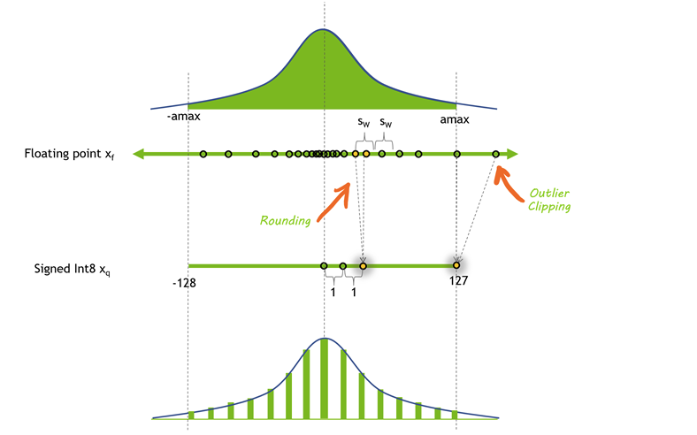
量化技术按对象分：只量化权重最省事，因为权重训完就固定了，但激活还留在高精度，等于留了性能在桌上。而且GPU没有INT8乘FP16的专用硬件，算的时候权重还得转回高精度。
量化激活更难：激活向量经常有outlier，动态范围大，低精度表示更吃力。办法有两种：拿代表性数据集跑一遍，找出outlier爱出现的位置，给某些激活更高精度，比如LLM.int8()；或者借权重的动态范围，权重量化容易，把它的范围复用到激活上。
和量化类似，很多深度学习模型对剪枝很鲁棒：把接近0的值直接置0。稀疏矩阵里大量元素是0，可以用压缩格式存，比稠密矩阵省空间。图10是压缩格式的稀疏矩阵。
GPU对一种结构化稀疏有硬件加速：每4个值里2个是0。稀疏还能和量化叠加，速度更快。怎么把大模型表示成稀疏格式最划算，现在还是活跃的研究方向。
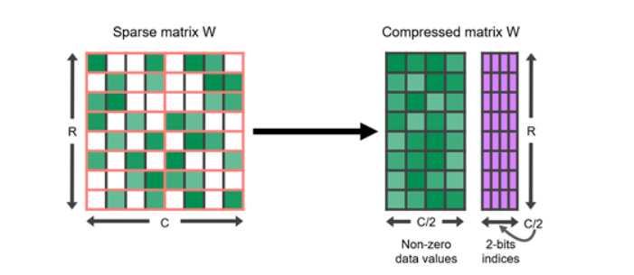
蒸馏是另一条路：把大模型的知识搬到小模型上。训一个小模型去模仿大模型的行为，学生学老师。
成功案例不少：DistilBERT把BERT压缩40%，保留97%的语言理解能力，速度快60%。LLM蒸馏也是活跃领域，通用做法最早来自Hinton那篇蒸馏论文：学生用一个loss去对齐老师的输出，可以再加一份和真实标签对齐的原始loss；对齐的可以是最后一层的logits，也可以是中间层激活。图11是知识蒸馏的通用框架：老师的logits当软目标，学生用蒸馏loss去拟合。
老师的数据也能拿来直接做监督训练，对标注稀缺的场景特别有用。Distilling Step by Step更进一步：除了标签，还把老师的推理过程抽出来当中间步骤，训小模型更省数据。
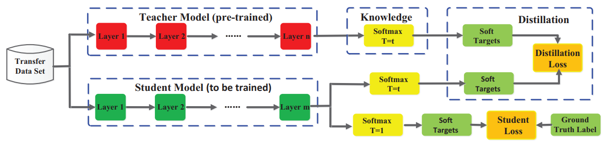
有个坑：现在很多最强LLM的license禁止拿它的输出去训别的模型，找合适的老师并不容易。
模型执行经常是内存带宽bound，尤其是权重带宽。前面所有模型优化做完，大概率还是带宽bound。所以思路是：权重加载进来一次，就尽量多干活，也就是并行。两条路：in-flight batching让多个请求同时跑，推测推理让序列的多个步并行试跑。
LLM的执行有个特点让批处理很难：同一个模型同时服务的任务千差万别，聊天问答、文档摘要、代码生成，输出长度能差好几个数量级。请求有早有晚，凑成batch并行执行经常对不齐。
in-flight batching就是为这种动态负载设计的调度：文本生成本来就是一轮一轮迭代的，不用等整个batch跑完再换下一批，跑完的序列立刻出队，新请求马上顶上，剩下的请求继续飞。真实场景下GPU利用率提升明显。
推测推理也叫推测采样、辅助生成或块级并行解码：GPT式模型自回归生成，一个token一个token往外蹦，第n个没出来第n+1个没法算。但可以用便宜的办法先起草几个token，再让主模型并行验证。
图12是个例子：起草模型先预测后面几步，主模型并行验证，前两个token通过，第三个被拒掉删掉，继续生成。草稿的来源很多：训多个小模型、多训几个预测未来token的头，或者直接拿小模型当草稿、大模型当验证器。
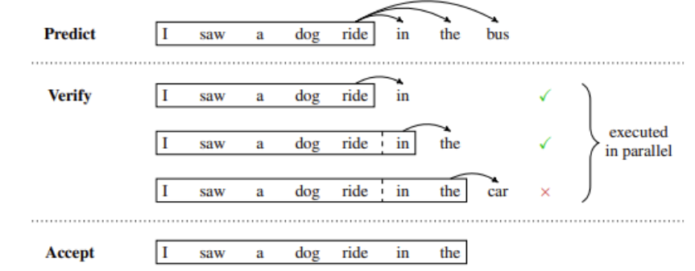
这篇教程把数据中心、云端和边缘PC上高效推理serving的常用解法串了一遍，很多在TensorRT-LLM里都是开箱即用的：开源库，TensorRT深度学习编译器加上优化kernel、前后处理和多卡多节点通信原语。
NVIDIA Dynamo支撑TensorRT-LLM，让企业能跨框架、跨硬件并发服务多个模型，吞吐最高延迟最低。Nemotron 3这类开放模型和Llama等社区模型都有配好的TensorRT-LLM配置，参考部署和示例脚本在GitHub上。
想最快用上这些，NVIDIA NIM把TensorRT-LLM和vLLM、SGLang这些社区框架的最新推理优化都打进了容器，模型、依赖、标准API开箱即用，NVIDIA负责验证和维护，工作流直接插进自动化交付管线。
参考：